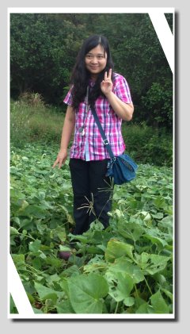

FIELD JOURNAL / 2015 專題紀錄
有人引路，探索就能走得更遠。
三位老師從不同專長陪伴小組；保留他們的參與心得與給孩子們的話。
華欣老師（電腦科專任教師兼任導師）


參加心得
這是我第二次帶網界博覽會的專題，距離上一次已有五年，實在不能稱為老手，勉強算是「新手上路」。
從資料蒐集、擬定主題、撰寫研究計畫書、擬定研究架構、研究設計、研究實施，到最後的網頁規劃與製作，看著這一組一步一腳印慢慢成長、茁壯，心裡真的很開心。尤其是你們團隊合作的精神與態度，全組動員、分工專注，令人動容。整個過程或許有些風風雨雨，但慶幸也感恩，我們都走過來了。利用午休開會討論，利用假日到六股重和挖地瓜、焢窯，到老街地毯式搜尋採訪，跑外環道找地瓜特產，最後再彙整資料……對我或對孩子們而言，都是很辛苦的事，因為我們必須利用課餘時間進行這些課堂外的任務，很多時候是在疲憊的狀態下進行。雖然辛苦，但看到孩子們的成長，再累也值得。每當看到又有突破而用心的作品，讓我眼睛一亮，就又忘了所有辛苦，再次開心地面對一切。
華欣老師
給孩子們的話
專題研究或電腦實作都是實務取向的課程，很多東西課堂上不見得講得清楚，但透過實際操作，能學到的知識與技能非常多。閱讀與寫作的能力也不分年齡，時時刻刻都需要再精進；不論未來你的專長是什麼，這些都是「帶得走的能力」。人生有夢，築夢踏實，希望所有孩子經過這次活動，都能學到「認真、踏實、努力、不懈」的學習態度。如果能再多給你們一點時間，我相信你們一定可以做得更好！
跳至其他成員
鳳英老師（國文科專任教師）

金山地瓜是名聞遐邇的地方特色之一。在金山發展在地文化與觀光的過程中，地瓜扮演著重要角色，也是偏遠地區發展特色文化、創業成功的典範。值此網界博覽會之際，金山高中高二資訊應用學程的同學選擇研究金山地瓜，是很有意義的。
這幾個月來，同學們秉持好奇求知的心，不辭辛勞地提出問題、分組採訪、整理資料、進行訪客與鄉民調查，一路走來雖然辛苦，但收穫良多。凡走過必留下痕跡，以成功為師，孩子們可以有不同的視野與歷練。金山地瓜的專題製作歷程，一定有助於同學將來進行其他專題研究、解決問題，甚至克服人生的挫折與困難，這將會是最好的磨鍊。
鳳英老師
跳至其他成員
美玲老師（家政科專任教師兼任導師）

參加心得
帶學生參加網界博覽會，很多細節都是在摸索中學習與成長。我是這群孩子國中時期的家政老師，當孩子需要料理 DIY 的體驗活動、邀請我擔任指導老師時，我便以金山地瓜設計了幾項適合孩子們動手做的簡單料理，讓他們在活動中認識地瓜的不同樣貌。
美玲老師
給孩子們的話
看到電腦老師帶領孩子們讓專題網頁慢慢成形的那一刻，一種無法言喻的喜悅浮上心頭。希望參加活動的孩子們，能在這個活動中展現金山孩子的活力，珍視這難得的學習機會；也希望我們的專題能獲得肯定。